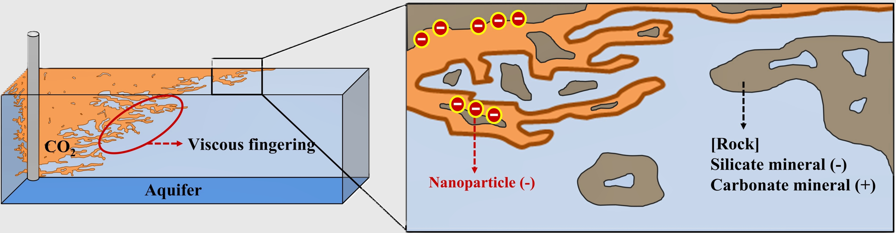

지속가능한 미래를 향한 지하 공학의 진보Advancing Subsurface Engineering for a Sustainable Future
실험·시뮬레이션·인공지능을 통합하여 지하 유체 유동의 메커니즘을 규명하고, 자원개발과 CO₂ 지중저장의 최적화를 수행합니다.We integrate experiments, simulation, and AI to characterize subsurface fluid flow and to optimize resource development and CO₂ geological storage.
학부연구생과 석사과정(석박사통합과정 포함) 학생을 모집 중입니다. 소속 학생에게는 심화 강의와 상용 소프트웨어 교육을 제공합니다.We are recruiting undergraduate interns and M.S. (or integrated) students. In-depth courses and industry software training are provided. 모집 안내 →Learn more →
시뮬레이션Simulation
저류층·유정·파이프라인 전 구간의 유동을 수치 모델링하여 현장 문제를 해석하고 장기 거동을 예측합니다.Numerical modeling of flow across reservoirs, wells, and pipelines to interpret field problems and predict long-term behavior.
VIEW PROJECTS chevron_rightCO₂ 지중저장CO2 Storage
CO₂를 심부 지층에 안전하게, 더 많이 저장하기 위한 실험·시뮬레이션·AI 연구를 수행합니다.Experiments, simulation, and AI research to store CO₂ in deep formations safely and at greater capacity.
VIEW PROJECTS chevron_right유체 분석 실험Fluid Analysis
코어 주입 실험과 접촉각·계면장력 측정으로 암석–유체 상호작용과 유동 메커니즘을 규명합니다.Core flooding and contact angle/IFT measurements to characterize rock–fluid interactions and flow mechanisms.
VIEW PROJECTS chevron_right인공지능Artificial Intelligence
머신러닝·최적화 알고리즘으로 생산량·저장량을 예측하고, 상충하는 목표를 동시에 만족하는 다목적 최적화를 수행합니다.Machine learning and optimization to forecast production/storage and to perform multi-objective optimization of competing goals.
VIEW PROJECTS chevron_right연구실 소식 & 실적Lab Updates & Publications
연구 성과, 학술 활동, 연구실 운영 관련 소식을 게시합니다.Research outcomes, academic activities, and lab announcements.

최근 소식RECENT ANNOUNCEMENTS
전체 보기VIEW ALL지하에서 미래 에너지를 설계할 사람을 찾습니다Design the future of energy — underground
석유·천연가스부터 CCS까지, 실험·시뮬레이션·AI 전 과정을 수행하는 연구실입니다. 학부연구생·대학원생의 지원 문의를 받습니다.From oil & gas to CCS — a lab covering the full cycle of experiments, simulation, and AI. Inquiries from prospective students are accepted at any time.